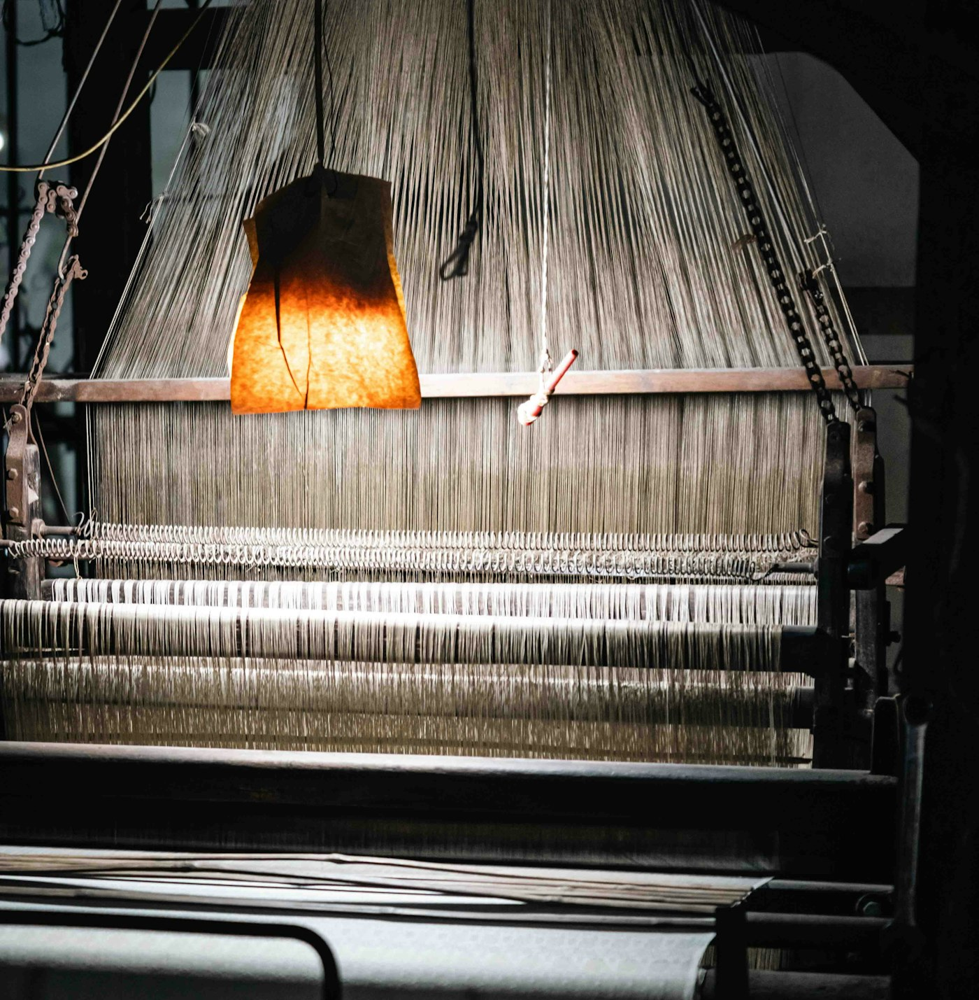

A standard for the whole processing chain.
GOTS is a voluntary textile processing standard for goods made with certified organic natural fibres. It brings material integrity, environmental controls and social requirements into one certification system. Apparel, home textiles and other eligible textile products can fall within its scope.
Organic farming certification establishes the status of the raw fibre. GOTS carries that assurance into the textile processing chain: spinning, fabric formation, wet processing, manufacturing, packaging, labelling and relevant trade. An organic input alone does not make a finished garment GOTS-certified. [1]
- Certified organic fibre
- Spinning
- Weaving / knitting
- Dyeing / printing / finishing
- Garment manufacture
- Packaging & trade
Read the page as an overview of the standard and a practical implementation guide. The cited Standard, Implementation Manual and certification-body decisions govern individual cases.
The 2026 revision and the transition.
GOTS Version 8.1
Released on 22 June 2026 with minor corrections to Version 8.0. Audits and assessments from 1 March 2027 must use Version 8.1; early adoption is permitted during the transition. Confirm the applicable edition with the certification body for an audit before that date. [2]
The revision gives more attention to due diligence and governance, air emissions, waste, circularity, microfibres and product-safety controls. A useful transition exercise is to compare existing procedures with the new edition, assign each gap to an owner, and retain evidence that the change works. [3]
Two label grades. One complete system.
Organic
Minimum certified organic fibre content for the organic grade.
Made with (x%) organic materials
The lower-threshold grade states the certified organic percentage.
Percentages refer to fibre content, excluding accessories. The balance must meet the permitted additional-material criteria; it is not an unrestricted allowance. In-conversion grades have their own eligibility and wording. [2]
The label identifies the grade, approved certification body and certified entity’s certification number. Product claims and artwork need the appropriate approval. A certified fabric passing through an uncertified manufacturing stage cannot simply retain a GOTS claim on the finished article. [4]

Material, environment, people and proof.
Organic integrity
Verify incoming materials, preserve identification and segregation, and reconcile quantities as goods move through production. Match the certified scope to the actual products and processes. [1]
Chemical & environmental control
Wet-processing inputs require approval before use. Environmental controls address resource use, wastewater treatment and pollution prevention. The current criteria and manual determine restrictions and assessment methods. [5]
Human rights & work
Social requirements address forced and child labour, discrimination, freedom of association, safe work, remuneration and working time. Site implementation needs functioning worker communication and management controls. [6]
Quality & governance
Product quality and residue assessment sit alongside due diligence and ethical business conduct. Responsibilities, supplier risks and corrective actions need to be addressed within the organisation’s management approach. [6]
Translate requirements into daily work
A practical control plan can give each department one clear responsibility: Purchasing verifies inputs; Stores maintains lot identity; Production records movements and losses; EHS monitors treatment and handling; HR maintains employment evidence; Quality coordinates testing and claim approval. This is a suggested operating model, to be adapted to the site.
The certificate and the shipment answer different questions.
| Record | What it establishes | Suggested check |
|---|---|---|
| Scope Certificate (SC) | The entity’s certified activities and scope. | Match entity, site, validity, products and processing categories to the purchase. |
| Transaction Certificate (TC) | Certified goods associated with a transaction. | Match goods, seller, buyer, quantities and supporting delivery records. |
Material separation, transport records, documented losses and volume reconciliation help preserve the chain of custody. A supplier’s certificate should be checked for relevance to the goods being bought. [1]
A simple quantity-reconciliation example
The following is an illustrative stock check, using kilograms at one consistent measurement boundary. It is a bookkeeping aid rather than a GOTS certification formula.
200 + 1,000 = 900 + 100 + 200 kg
Both sides total 1,200 kg. Investigate any unexplained difference before clearing the record. Real processes may need separate work-in-progress, moisture and conversion adjustments; document those assumptions.
From application to verified operations.
Define the activities and choose a certification body
Identify the sites, processes, products and outsourced activities to be assessed. Select an approved independent certification body.
Apply and prepare the operation
Submit company information and review materials, chemicals, processes and records with the certification body.
Complete the assessment
The certification process includes document review and an on-site audit of actual operations.
Resolve findings and maintain compliance
Address identified nonconformities. Certification follows a successful verification decision; keep controls active after the assessment. [7]
A useful preparation sequence is to trial one order end to end, from purchase evidence to final dispatch. Invite each department to explain its own records and resolve gaps before the external audit.
Build evidence around the process.
This suggested working checklist organises preparation by department. It is not the official or exhaustive list of mandatory documents; confirm applicability against the edition, manual and certification scope.
| Area | Useful working records | Suggested owner |
|---|---|---|
| Company & scope | Site and process list, layout, responsibilities, subcontractor register. | Management / compliance |
| Purchasing | Supplier verification, relevant SCs and TCs, purchase orders and invoices. | Purchasing |
| Stores & production | Receipt register, lot labels, stock ledger, job cards, movement and loss records. | Stores / production |
| Chemical control | Input list and approval evidence, SDS, recipes, purchase and consumption records. | Chemical stores / EHS |
| Environmental control | Relevant permissions, water and energy logs, treatment records, test results and waste records. | EHS / engineering |
| Workers | Recruitment and age checks, contracts, time and payroll records, safety training and grievance follow-up. | HR / safety |
| Quality & dispatch | Test plans and results, claim approvals, packing lists, dispatch records and complaints. | Quality / commercial |
| Management | Risk assessments, training, internal checks, finding logs and evidence of corrective-action effectiveness. | Compliance / management |
Follow one order before scaling the system.
For a hypothetical organic cotton T-shirt order, create a single order reference and connect these checks to it:
- Before receipt: review the supplier and agree how shipment evidence will be provided.
- At inward: record quantity and lot identity; keep any unresolved material on hold.
- During processing: connect batches, recipes and subcontract movements to the order.
- At cutting and sewing: record output, work in progress, scrap and rework on a consistent basis.
- Before dispatch: review composition, testing, label approval and transaction records together.
The most useful internal check is to select a packed article and work backwards. Can the team identify the fabric lot, processing route and incoming supply evidence without relying on someone’s memory?
Clarify the claim before making it.
Does an organic cotton invoice make the garment certified?
No. The processing chain and final claim must also satisfy the certification and labelling rules. Organic-fibre documentation is one part of the evidence. [4]
Can I use the GOTS logo on my own?
Use the official conditions and seek the required certification-body approval for the intended claim and artwork. The mark is controlled; it is not a decorative sustainability icon. [8]
Can the page serve as an audit checklist?
Use its practical tables to organise your work, then check each applicable requirement in the official Standard and Implementation Manual. Product type, processes, scope and edition affect what evidence is needed.
How should outsourced work be managed?
Map the subcontractor, activity and material movements before sending goods out. Confirm the applicable certification arrangements with your certification body and keep the order trail complete.
Official resources.
Sources checked on 19 October 2026. Follow the official resource hub for subsequent changes.
- How the GOTS system works ↗Processing stages, supply-chain checks and certification overview.
- GOTS Standard, Version 8.1 ↗The official requirements and transition dates.
- The 2026 revision announcement ↗Background to the updated requirements.
- GOTS labelling guidance ↗Grade wording, claim boundaries and label elements.
- GOTS key features ↗Environmental, material and social principles.
- Implementation Manual, Version 8.1 ↗Interpretation and application of the Standard.
- Get certified ↗Certification process and approved-body guidance.
- Conditions for the Use of Signs, Version 4.0 ↗Detailed rules for marks and communications.
Open the official GOTS resources hub ↗
Cotton: Oshin Khandelwal. Weaving: Bernd Dittrich. Photographs used under the Unsplash License. Background: supplied textile-processing video. Images illustrate the subject and do not assert certification of the pictured sites or materials.